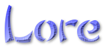
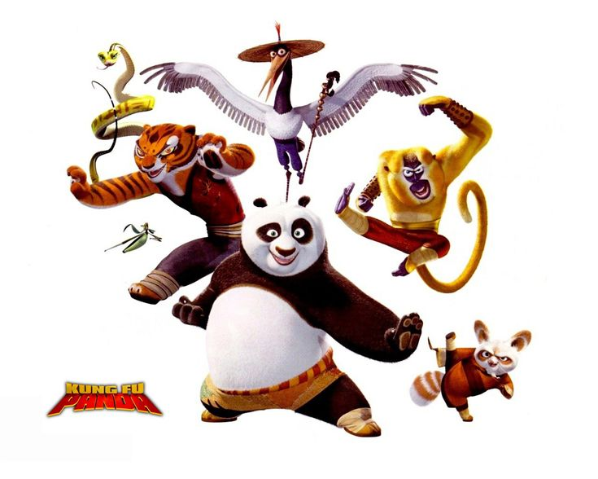
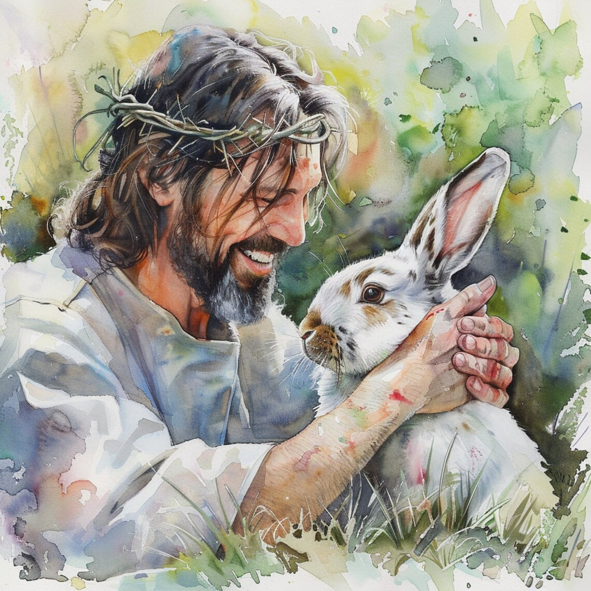
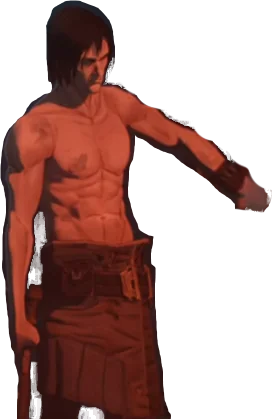
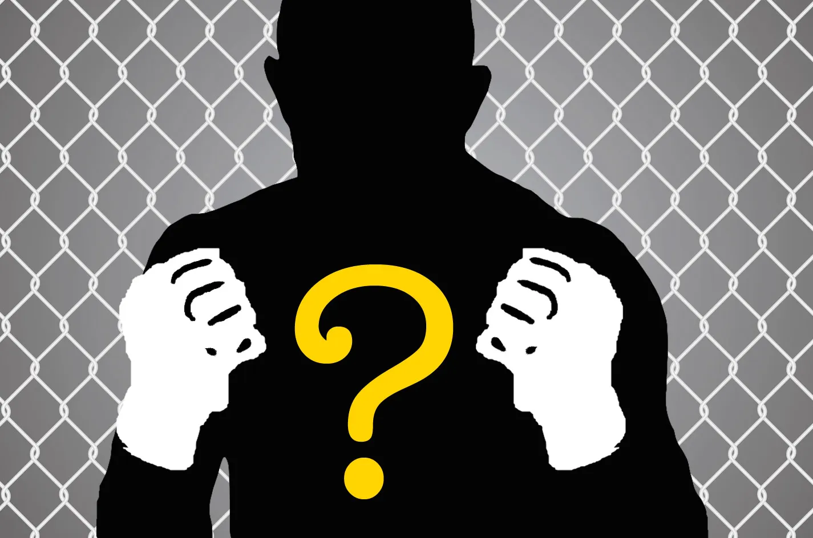

Bidragen och kulturen kring KFP har utvecklats under åren. Om du är ny
så kanske du snart kommer att märka att det finns återkommande teman och
karaktärer som KFP deltagare älskar att referera till och göra
inside-skämt om. Denna sidan fungerar lite som en guide där man kan lära
sig om de allra viktigaste karaktärerna som är en del av denna Kung Fu
Påska-Loren. Detta är inte de enda figurerna som man får dyrka under
påsken, men det är dem viktigaste.

Po och company
Eftersom KFP från början var ett firande helt centrerat kring Kung Fu
Panda serien så är det inte konstigt att Kung Fu Pandan själv och hans
många vänner har dykt upp flera gånger som viktiga figurer i
påsk-mytologin. Både Master Oogway och Po “Noodles" har dykt upp i
person vid tillfällen. Tävlingar har skett i både Lord Shen och Mr Pings
namn. Alla älskar denna animerade filmserie och vilken Kung Fu Panda
referens som helst har möjlighet att bli en instant klassiker hos många
påskfirare.

Jesus och Påskharen
Trots att det är den mest populära påsk-filmen som finns så är det inte
många direkta referenser till den västerländska påsktraditionen i någon
av Kung Fu Panda filmerna. Men detta är ju inte Kung Fu Panda-fest utan
Kung Fu Påska. Klassiska påskteman såsom Påskharen, Ägg eller Mirakulös
återfödelse kan dyka upp här och där. Ett av de mest berömda bidragen i
KFP historia var en musikal som berättar om hur påsken blev till, fast
med en kung fu tvist.

Smeden
Smeden är en extremt älskad karaktär från en obskyr Netflix-serie. Hans
stora popularitet växte fram runt 2021/2022 på internetforumet
“www.reddit.com/r/Smeden”. Han ses ofta som en symbol för manlighet och
mänsklig potential. Smeden firades ofta under sin egna högtid: “Feast of
Smeden”, men eftersom Feast of Smeden har råkat infalla på samma datum
som KFP tre år i rad så har många valt att fira dessa 2 högtider
tillsammans och Smeden anses nu vara en essentiell del av KFP kultur.
Tydligen så ska r/Smeden vara ett väldigt bra ställe för frukost tips...
Chris Pratt Super Mario
2023 så utvidgades Kung Fu Påska världen till att även inkludera den
animerade Super Mario Bros. filmen. Detta sågs som en acceptabel
ersättning för kung Fu Panda det året då det fortfarande var en ny
animerad film med Jack Black som en av huvudrollerna. Chris Pratts Super
Mario film visades med blandad mottagning och har haft begränsat
inflytande på KFP historia efter 2023.

???
Framtiden är osäker. Detta är kanske de mest etablerade delarna av
KFP-loren just nu, men precis som i verkligheten så är kultur ett
ständigt utvecklande väsen. Om nya teman och karaktärer från främmande
världar introduceras under ett KFP firande och uppskattas så är det
troligt att de dyker upp på den här sidan i framtiden.